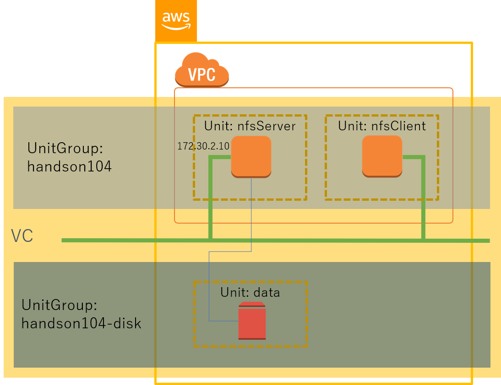
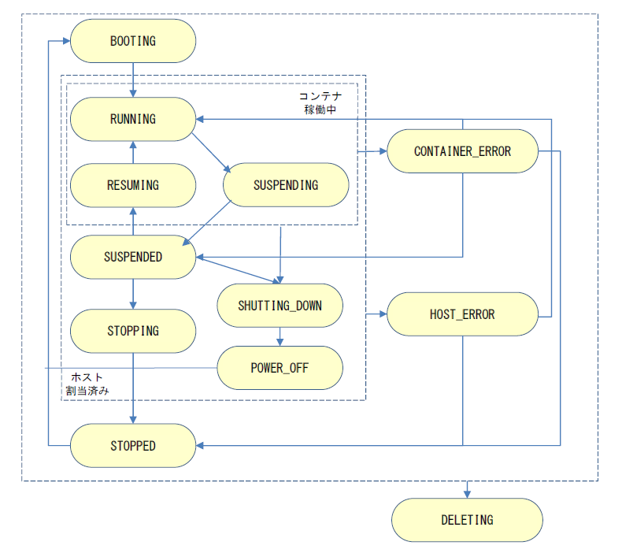
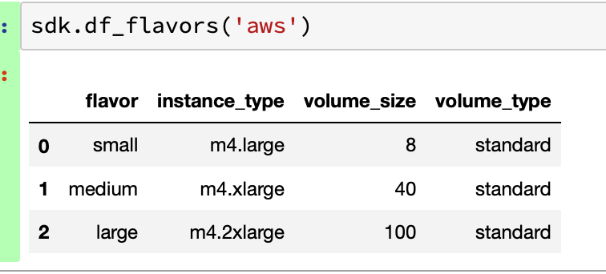
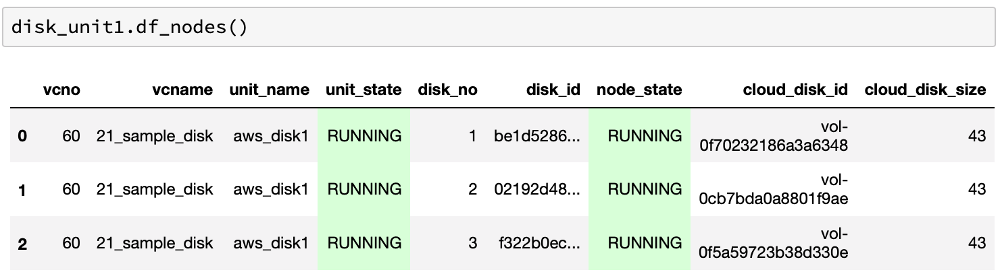
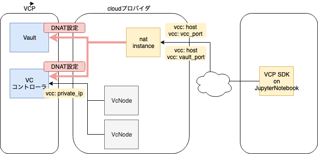

1. VCP SDK の機能仕様とシステム設計について
1.1. VCP SDK の利用環境の前提条件
Python バージョン 3.10 以上
- JupyterNotebook: NII クラウド運用チーム提供 Docker イメージ
- VCP SDK の展開先ディレクトリ: 環境変数 PYTHONPATH に設定
環境変数 PYTHONPATH のデフォルト設定: PYTHONPATH=/home/jovyan/vcpsdk
1.2. VCP による仮想システム環境の基本的な構成要素
VCP SDK が扱う仮想システム環境は、以下の構成要素を持つ。
{kind=link}

Virtual Cloud (VC) - 複数のクラウドにまたがって構築されたひとつの仮想システム環境
UnitGroup - サーバ、クライアントなどの相互に関係をもつ異質な Node 群をグループとしてまとめて扱う単位 - 複数の Unit を1つの UnitGroup にまとめることができる
Unit - 同質（同じクラウド、同じ計算資源 (cpu, memory, ...) 、同じ用途）である Node をまとめて扱うための単位 - Unit に 属する Node をスケールアウト、スケールインすることができる
Node - UnitGroup を構成する個々のノード - パブリッククラウドの仮想マシン (Amazon EC2 インスタンス、Microsoft Azure VM など）やベアメタル・インスタンス (BM) - クラウド環境の個々の VM/BM に VCP で共通環境となるコンテナを起動する。VCPではこのコンテナを「Base コンテナ」と呼ぶ。
1.3. UnitGroup の状態定義
UnitGroup は、その管理下にある Unit と Node の状態により、以下の状態遷移を持つ。

1.4. Node の状態定義
Node は、クラウド環境の VM/BM の起動状態やネットワーク接続状況により、以下の状態遷移を持つ。
{kind=link}

1.5. VCP SDK が扱う計算資源の属性
1.5.1. provider
以下のクラウドプロバイダに対応する。
Amazon Web Services (AWS)
Microsoft Azure
北海道大学ハイパフォーマンスインタークラウド サーバサービス
VMware vSphere
さくらのクラウド
Oracle Cloud Infrastructure
Chameleon Cloud
Google Cloud Platform (GCP)
オンプレミス・サーバ (On-premises)
mdx2
Proxmox VE
1.5.2. spec
クラウド環境の VM/BM における CPU コア数、搭載メモリ量などの設定。 VCP SDK の flavor を定義して設定するか、または項目ごとに値を設定する。
クラウドプロバイダごとの項目は、 spec一覧 を参照。 指定可能な個数や条件は APIドキュメント を参照。
# flavor か取得
spec = sdk.get_spec('aws', 'small')
# カスタマイズ
spec.instance_type = 'm5.xlarge'
1.5.3. flavor
small, large など、クラウド環境の VM/BM の spec 指定を抽象化した形式で扱う設定。
利用者毎に flavor ファイル vcp_flavor.yml の内容をカスタマイズすることができる。
vcp_flavor.yml 記述例
#
# VCP SDK cloud flavor
#
#
# Amazon Web Services (AWS)
#
aws:
small:
instance_type: m4.large
volume_type: gp2
volume_size: 8
medium:
instance_type: m4.xlarge
volume_type: gp2
volume_size: 40
large:
instance_type: m4.2xlarge
volume_type: gp2
volume_size: 100
gpu:
instance_type: p2.xlarge
volume_type: gp2
volume_size: 40
aws_disk:
small:
type: standard
size: 8
medium:
type: standard
size: 32
large:
type: standard
size: 128
aws_spot:
small:
instance_type: m4.large
volume_type: standard
volume_size: 8
medium:
instance_type: m4.xlarge
volume_type: standard
volume_size: 40
large:
instance_type: m4.2xlarge
volume_type: standard
volume_size: 100
#
# VMware vSphere
#
vmware:
small:
num_cpus: 1
memory: 1024
disk_size: 40
medium:
num_cpus: 2
memory: 2048
disk_size: 40
large:
num_cpus: 8
memory: 4096
disk_size: 100
#
# Hokkaido University High Performance Intercloud Server Service
#
hokudai:
small:
flavor_name: '1core-6GB'
volume_size: 50 # minimum 50G
medium:
flavor_name: '2core-8G'
volume_size: 80
large:
flavor_name: '4core-16G'
volume_size: 100
#
# SAKURA Cloud
#
sakura:
small:
sakuracloud_disk_plan: ssd
sakuracloud_disk_size: 20
core: 1
memory: 1
medium:
sakuracloud_disk_plan: ssd
sakuracloud_disk_size: 80
core: 2
memory: 4
large:
sakuracloud_disk_plan: ssd
sakuracloud_disk_size: 200
core: 4
memory: 8
sakura_disk:
small:
sakuracloud_disk_plan: ssd
sakuracloud_disk_size: 20
medium:
sakuracloud_disk_plan: ssd
sakuracloud_disk_size: 40
large:
sakuracloud_disk_plan: ssd
sakuracloud_disk_size: 249
#
# Microsoft Azure
#
azure:
small:
vm_size: Standard_B1s
disk_size_gb: 40
managed_disk_type: Standard_LRS
medium:
vm_size: Standard_D3_v2
disk_size_gb: 100
managed_disk_type: Standard_LRS
large:
vm_size: Standard_D4_v2
disk_size_gb: 100
managed_disk_type: Premium_LRS
azure_disk:
small:
storage_account_type: Standard_LRS
disk_size_gb: 8
medium:
storage_account_type: Standard_LRS
disk_size_gb: 32
large:
storage_account_type: Standard_LRS
disk_size_gb: 128
#
# Oracle Cloud Infrastructure
#
oracle:
small:
shape: VM.Standard.E2.1
boot_volume_size_in_gbs: 50
medium:
shape: VM.Standard.E2.2
boot_volume_size_in_gbs: 100
large:
shape: VM.Standard1.1sd
boot_volume_size_in_gbs: 250
oracle_disk:
small:
size_in_gbs: 20
medium:
size_in_gbs: 40
large:
size_in_gbs: 250
#
# Google Cloud Platform
#
gcp:
small:
machine_type: f1-micro
disk_size_gb: 40
disk_type: pd-standard
medium:
machine_type: n1-standard-1
disk_size_gb: 100
disk_type: pd-ssd
large:
machine_type: n1-highcpu-2
disk_size_gb: 100
disk_type: pd-ssd
#
# Proxmox VE
#
proxmox:
small:
num_cpus: 1
memory: 2048
disk_size: 40
medium:
num_cpus: 4
memory: 4096
disk_size: 80
large:
num_cpus: 8
memory: 8192
disk_size: 120
#
# mdx2
#
mdx2:
small:
flavor_name: 'vc1m2g'
volume_size: 25
volume_type: tripleo
medium:
flavor_name: 'vc2m4g'
volume_size: 50
volume_type: tripleo
large:
flavor_name: 'vc4m8g'
volume_size: 100
volume_type: tripleo
mdx2_disk:
small:
type: tripleo
size: 25
medium:
type: tripleo
size: 50
large:
type: tripleo
size: 100
#
# On-premises
#
onpremises:
default:
flavor_name: dummy
VCP SDK VCPSDK::df_flavors() を利用して、内容を確認することができる。
{kind=link}

1.6. VCP SDK API 利用方法
1.6.1. 起動
最もシンプルな VC ノード起動方法は、以下のような 4 ステップの Python コードで実現可能である。
AWS 上に VC ノードを起動するためのサンプルコードを示す。
from common import logsetting
from vcpsdk.vcpsdk import VcpSDK
#
# VCP SDK 初期化
#
vcc_access_token = "ユーザ毎のアクセストークン"
sdk = VcpSDK(vcc_access_token)
#
# UnitGroup 作成
#
ugroup = sdk.create_ugroup('MyUnitGroupName', 'compute')
#
# 作成する Unit の spec 情報を作成
#
spec = sdk.get_spec("aws", "small")
#
# 変更可能な spec
#
# spec.num_nodes = 1
# spec.instance_type = 'm4.large'
# spec.params_v = ['/opt:/opt']
# spec.params_e = ['USER_NAME=test']
# spec.volume_size = 40
# spec.volume_type = "standard" # standard|io1|gp2|sc1|st1
# spec.disks = ['vol-08cbb04b35c8c9545']
# VC ノードの DNS 設定 (設定ファイル vcp_config.yml で記述した値を変更可能)
# spec.dns = [ '1.1.1.1', '1.0.0.1' ] # e.g. Cloudflare
# spec.dns_opt = [ "timeout:60" ]
# spec.dns_search = "example.com"
# spec.hostname = "mynode"
# VC ノードの /etc/hosts に追加 (設定ファイル vcp_config.yml で記述した値を変更可能)
# spec.add_host = [ "myhost:192.168.1.1", "yourhost:192.168.1.200"]
# AWS EC2 インスタンスのタグ設定
# spec.set_tag('key1', 'value1')
# spec.set_tag('key2', 'value2')
# VC ノード に SSH 接続するための公開鍵を設定
spec.set_ssh_pubkey('tmp/id_rsa.pub') # tmp/id_rsa はあらかじめ作成しておく
#
# 作成した spec 情報を利用して Unit を作成（VCノード起動）
#
unit = ugroup.create_unit("new_sample_server", spec)
create_unit() による VC ノード起動に長時間を要してタイムアウトすると、その戻り値の Unit 情報 (vcpsdk::VcpUnitClass) を取得できない。 その場合でも、結果的に VC ノードの起動が完了していれば、 unit_name を指定して get_unit() を実行することにより Unit 情報を取得し、Unit に対する各種操作を継続することが可能である。
1.6.2. UnitGroup 確認
for ugroup in sdk.find_ugroup():
print(ugroup)
---
[Vc]
+ type[compute] name[03_sample] owner(user1) vcno(55) state[RUNNING] vcid[fxxxb28xxxxxxxe698e8001995b7b4a2]
...
df_ugroups() の例

1.6.3. 起動した Unit, Node の確認
for node in ugroup.find_nodes():
print(node)
---
[VcNode]
+ no(1) state[RUNNING] id[13xxxxxxxxxxxxxxx2babc606cb4e60f] \
cloud_instance_address[172.30.2.242] cloud_instance_id[i-0e868711a439130d3]
...
---
[VcNode]
+ no(1) state[RUNNING] id[13xxxxxxxxxxxxxxx2babc606cb4e60f] \
pandasのDataFrame形式で出力する方法は、以下の通り。
df_units() の例

df_nodes() の例
# VCコントローラー全体(所有UnitGroup内のみ)
sdk.df_nodes()
# VCコントローラー全体(特権モードで全て)
sdk.df_nodes(privileged=True)
# UnitGroup内
ugroup..df_nodes()
# Unit内
unit.df_nodes()
df_nodes() のdisk例
{kind=link}

もし、設定などの問題で起動に失敗していた場合、Unit を削除する。
ugroup.delete_units('Unit名', force=True)
指定できる個数、条件は、APIドキュメント を参照。
1.6.4. Node 追加
起動済みの Node と同じ spec の Node を追加することができる。
e.g. Node を5個追加
unit.add_nodes(5)
1.6.5. Node 削除
起動済みの Node を条件指定により削除することができる。
e.g. 起動済みの Node のうち、1個削除
unit.delete_nodes(1)
e.g. 起動済みの Node に対応するクラウドインスタンスの「IP アドレス」を指定して削除
unit.delete_nodes(ip_address="xxx.xxx.xxx.xxx")
指定できる条件は、APIドキュメント を参照。
1.6.6. UnitGroup 初期化 (全 Unit 削除)
UnitGroup 配下の全ての Unit と Node を削除する。
ugroup = sdk.get_ugroup('UnitGroup名')
ugroup.cleanup()
1.6.7. spec のカスタマイズ
spec の各項目は、その属性値を直接設定することができる。
spec = sdk.get_spec('aws', 'small')
spec.volume_size = 80
1.6.8. UnitGroup 情報の確認
利用する VC コントローラの管理下にある UnitGroup 情報を確認する。
for ugroup in sdk.find_ugroups():
print(ugroup)
---
+ type[compute] name[03_sample] owner(user1) vcno(55) state[RUNNING] vcid[fxxxb...]
- ...
...
指定できる条件は、APIドキュメント を参照。
1.6.9. VPNカタログ情報の確認
VCで利用できるVPNカタログ情報を取得する。
print(sdk.get_vpn_catalog("aws"))
---
{'default': {'aws_availability_zone': 'ap-northeast-1a', 'aws_vpc_subnet_id': 'subnet-0a743...', 'private_network_ipmask': '172.30.2.0/24', 'aws_vpc_security_group_id': 'sg-0a56...', 'aws_region': 'ap-northeast-1'}}
引数でproviderを省略すると、全providerの情報を一括して取得できる。
# 全部
catalogs = sdk.get_vpn_catalog()
for provider in catalogs.keys():
if provider in ["onpremises"]:
continue
print("== provider {}".format(provider))
print(catalogs[provider])
---
== provider oracle
{'default': {'oracle_subnet_id': 'ocid1.subnet.oc1.ap-tokyo-1.aaxx...', 'oracle_availability_domain': 'mkro:AP-TOKYO-1-AD-1', 'private_network_ipmask': '172.24.2.0/24', 'oracle_tenancy_ocid': 'ocid1.tenancy.oc1..aa...', 'oracle_compartment_id': 'ocid1.compartment.oc1..a...', 'oracle_region': 'ap-tokyo-1'}}
== provider sakura
{'default': {'sakura_private_subnet_gateway_ip': '172.20.1.4', 'sakura_local_switch_id': '1...', 'private_network_ipmask': '172.20.1.0/24', 'sakura_zone': 'tk1a'}}
== provider aws
{'default': {'aws_availability_zone': 'ap-northeast-1a', 'aws_vpc_subnet_id': 'subnet-0a743...', 'private_network_ipmask': '172.30.2.0/24', 'aws_vpc_security_group_id': 'sg-0a56...', 'aws_region': 'ap-northeast-1'}}
== provider azure
{'default': {'private_network_ipmask': '172.21.1.0/24', 'azure_location': 'Japan East', 'azure_resource_group_name': 'niivcp', 'azure_vnet_name': 'vcc3013', 'azure_subnet_name': 'vcc3013subnet', 'azure_security_group_name': 'vcc3013-main-nsg'}}
== provider aws_spot
{'default': {'aws_availability_zone': 'ap-northeast-1a', 'aws_vpc_subnet_id': 'subnet-0a7...', 'private_network_ipmask': '172.30.2.0/24', 'aws_vpc_security_group_id': 'sg-0a5...', 'aws_region': 'ap-northeast-1'}} ...
指定できる条件は、APIドキュメント を参照。
1.6.10. 何か問題があったらバージョン情報を確認
バグ報告や質問などは、VCP SDK のバージョン情報を添えてご報告ください。
# VCP SDK バージョン確認
sdk.version()
---
vcplib:
filename: /home/jovyan/vcpsdk/vcplib/occtr.py
version: 20.08.0+20200831
vcpsdk:
filename: /home/jovyan/vcpsdk/vcpsdk/vcpsdk.py
version: 20.10.0+20201001
plugin:
aws: 1.2+20191001
aws_disk: 1.0+20190408
aws_spot: 1.1+20191001
azure: 1.2+20191001
vmware: 1.1+20191001
azure_disk: 1.0+20190408
sakura: 1.1+20191001
sakura_disk: 1.0+20190930
oracle: 1.0+20200331
oracle_disk: 1.0+20200331
aic: 1.2+20191001
abc: 1.3+20190408
hokudai: 1.1+20191001
chameleon: 1.0+20200831
chameleon_ext: 20200731
gcp: 1.0+20190408
onpremises: 1.0+20190408
vc_controller:
host: 10.0.0.1
name: vcc3060
wait_timeout_sec: 1000(default 15min)
vc_controller: 20.10.0+20201001
vc_controller_git_tag: nightly-20200511-15-g8dd969e
plugin:
sakura: 1.1+20200401
aws: 1.2+20200401
abc: 1.3+20200401
gcp: 1.0+20200401
vmware: 1.1+20200401
aws_spot: 1.1+20200401
azure: 1.2+20200401
aic: 1.2+20200401
chameleon: 1.0+20200401
hokudai: 1.1+20200401
oracle: 1.0+20200401
1.6.11. Chameleon Cloud の例
Chameleon を使用する上で他のクラウドプロバイダと異なる点は、 クラウドインスタンスを起動する前に「予約」操作が必要なことである。
物理サーバおよびネットワークの予約処理は VC 利用者自身で行う必要がある。
ネットワーク予約

Chameleon Cloud 上で VC ノードを起動するためのサンプルコードを示す。
from common import logsetting
from vcpsdk.vcpsdk import VcpSDK
#
# VCP SDK 初期化
#
vcc_access_token = "ユーザ毎のアクセストークン"
sdk = VcpSDK(vcc_access_token)
# VC コントローラ環境に登録済みのクラウドネットワークセグメント情報 (VPNカタログ) を取得
vpn_catalog_name = "default"
vpn_catalog = vcpsdk.get_vpn_catalog("chameleon", catalog_name=vpn_catalog_name)
#
# ネットワーク確認
#
# Chameleon Network の予約用 Extension を生成
network_ext = sdk.get_extension("chameleon_network")
network_ext.setup(vpn_catalog)
# ネットワークの存在チェック
assert network_ext.network_exists(), "not exist sharedwan1"
#
# ホスト (物理サーバ) の予約
#
host_ext = vcpsdk.get_extension("chameleon")
# ホスト予約に必要な属性
node_type = "compute_skylake"
min_instances = 1
max_instances = 3
# 日付はUTCで指定する
start_dt = datetime.datetime.utcnow()
start_date=start_dt.strftime("%Y-%m-%d %H:%M")
end_date=(start_dt + datetime.timedelta(days=7)).strftime("%Y-%m-%d %H:%M") # 7日
host_ext.setup(
node_type,
start_date=start_date,
end_date=end_date,
min_instances=min_instances,
max_instances=max_instances,
lease_name_prefix = "S003", # lease_name の prefix
vpn_catalog=vpn_catalog,
)
# ホスト予約をリクエスト
lease_info = host_ext.reserve_host()
lease_info.wait()
# 予約IDを取得 (create_unitで必要)
reservation_id = lease_info.reservation_id
#---------------------------------------------------
#
# UnitGroupの作成
#
ugroup = sdk.create_ugroup('UnitGroup名', 'compute')
#
# 作成する Unit の spec 情報を作成
#
spec = sdk.get_spec("chameleon", "default")
spec.reservation = reservation_id # 予約済み reservation_id
#
# 変更可能な spec
#
# クラウドのマシンイメージ設定
# spec.cloud_image = 'niivcp-20170616'
# VC ノード に SSH 接続するための公開鍵を設定
spec.set_ssh_pubkey('tmp/id_rsa.pub')
# VC ノードのタグ設定は Chameleon Cloud ではサポートしない
#
# 作成した spec 情報を利用して Unit を作成（VCノード起動）
# (注意) ホスト予約の開始時刻の到来後に create_unit を呼ぶこと
#
unit_name = 'chameleon_server'
unit = ugroup.create_unit(unit_name, spec, wait_for=True, verbose=0)
1.7. VCP SDK の設定ファイル
VCP SDK を利用する VC コントローラ環境に対応したクラウドプロバイダの情報を 設定ファイル vcp_config.yml にあらかじめ記述しておく。
vcp_config.yml のデフォルトの展開先 PATH は以下のとおり。
/notebooks/notebook/vcp_config/vcp_config.yml
この PATH は VCP SDK 初期化時に config_dir='config directory' を指定することで変更可能である。
sdk = VcpSDK('アクセストークン', config_dir="./my_config")
vcp_config.yml は、 実行するnotebookの directory配下の以下の場所が有効となる。
./my_config/vcp_conig.yml
vcp_config.yml のサンプルを以下に示す。
#
# VC Controller
#
vcc:
host: VC Controller IP address
name: VC Controller Name
# 以降省略可。ネットワーク接続方式により必要な場合のみ
# DNAT情報などを管理者に問い合わせる。
# insecure_request_warning: False
# vcc_port: VCP REST API port
# vault_port: vault servivce port
# private_ip: VC Controller private IP
# VC ノードなどの起動・終了待ち時間の調整
wait_timeout_sec: 1000 # default 1000sec = 15minutes
# spec_options:
# # http://docs.docker.jp/engine/userguide/networking/default_network/donfigure-dns.html
# dns:
# - 8.8.8.8
# dns_search: example.com
# add_host:
# - "my_grafana:10.0.0.1"
# - "my_gw:172.30.1.10"
# - "my_manager:10.0.0.200"
# options:
# - timeout:60
# hostname: mynode
#
# Amazon Web Services (AWS)
#
aws:
access_key: "アクセスキーID"
secret_key: "シークレットアクセスキー"
private_network: "default"
#
# VMware vSphere
#
vmware:
user: "ユーザ名"
password: "パスワード"
private_network: "default"
#
# Hokkaido University High Performance Intercloud Server Service
#
hokudai:
user_name: "ユーザ名"
password: "パスワード"
private_network: "default"
#
# SAKURA Cloud
#
sakura:
sakura_token: "APIキーのアクセストークン"
sakura_secret: "APIキーのアクセストークンシークレット"
sakura_private_network: "default"
#
# Oracle Cloud Infrastructure
#
oracle:
user_ocid: "ユーザーのOCID"
fingerprint: "公開キーのフィンガープリント"
private_key: "秘密鍵"
private_network: "default"
#
# Microsoft Azure
#
azure:
subscription_id: "サブスクリプションID"
client_id: "クライアントID"
client_secret: "クライアントシークレット"
tenant_id: "テナントID"
private_network: "default"
#
# Chameleon Cloud
#
chameleon:
application_credential_id: "application_credential_id"
application_credential_secret: "application_credential_secret"
private_network: "default"
#
# Google Cloud Platform
#
gcp:
credentials: "クレデンシャル情報 (JSON文字列をBase64エンコードして1行で表現した値)"
private_network: "default"
#
# Proxmox VE の設定
#
proxmox:
token_id: "トークンID"
token_secret: "トークンシークレット"
private_network: "default"
#
# mdx2 の設定
#
mdx2:
user_name: "ユーザ名"
password: "パスワード"
private_network: "default"
1.7.1. JupyterNotebookからVCコントローラに直接接続できないネットワーク構成の場合対応
例えば、下図のようにJupyterNotebookがサービスネットワーク外で、DNAT経由でVCコントローラにアクセスする場合は、 以下の項目を設定して対応できる。
{kind=link}

insecure_request_warning: VCコントローラアクセス時のSSL証明書のエラー対応(True: エラー回避)
vcc_port: VCP REST API port番号(default 443)
vault_port: vault servivce port番号(default 8443)
private_ip: VcNodeからVC コントローラにアクセスするための、VC コントローラのIP(default vcc: host)
1.7.2. VcNode DNS の設定
VcNode上のbase container の DNS を spec で設定できる
例えば、以下のように dns (DNS server IP)、 hostname を設定する。
spec.dns = "1.1.1.1"
spec.hostname = "server01"
VcNode の base container を起動するdocker command は、以下のようになる。
docker run --hostname server01 --dns=1.1.1.1 ...
DNSの設定項目
dns
dns_search
add_host
options
hostname
docker の DNS option についての詳細は、以下のdocker公式ドキュメントを参照
http://docs.docker.jp/engine/userguide/networking/default_network/donfigure-dns.html
1.8. 特権モード機能
バージョン21.11 でVC コントローラに機能追加された、特権モード(privileged)機能を利用するために、 Superuser トークン所有者は、VCP SDK の各APIに引数 privileged=True をつけて特権モードを行使できる。
通常のモードでは、ユーザが所有している UnitGroup のみ、参照、操作することができる。 特権モードでは、ユーザが所有していない UnitGroup も、参照、操作することができる。
また、特権モードを行使できるのは、VC コントローラにアクセスするためのアクセスキーが、super ユーザとして登録されている場合のみである。 regular ユーザが、特権モードを行使しようとすると、権限エラーとなる。
例) 特権モードの指定方法
# 通常モード
ugroup.df_nodes()
# または、
ugroup.df_nodes(privileged=False)
# 特権モード
ugroup.df_nodes(privileged=True)
1.9. spec 一覧
1.9.1. provider 共通の spec
provider 共通の spec 項目は、以下の通り。
# 起動する VC ノードの個数
spec.num_nodes = 1
# Base コンテナ起動時の VOLUME (-v, --volume) パラメータ
spec.params_v = ['/opt:/opt']
# Base コンテナ起動時の環境変数 ENV (-e) パラメータ
spec.params_e = ['USER_NAME=test']
# 仮想マシンイメージ名（`onpremises`(=既存サーバモード)の場合は指定不可）
spec.cloud_image = 'vmtemplate01'
# VC ノードに SSH 接続するための公開鍵ファイル
spec.set_ssh_pubkey('tmp/id_rsa.pub')
Fixed IP |
静的なIPアドレスを割り当ててVCノードを起動する機能 |
Fixed MAC |
静的なMACアドレスを割り当ててVCノードを起動する機能 |
Attach volume |
クラウド上の既存のボリュームをクラウドインスタンスにアタッチする機能 |
Tag |
クラウドインスタンスやディスクに対するタグ設定機能 |
Disk API |
クラウドのディスクを作成、削除するAPI |
Power API |
VCノードに対応するクラウドインスタンスのPower on/offを行うAPI |
Provider |
Fixed IP |
Fixed MAC |
Attach volume |
Tag |
Disk API |
Power API |
|---|---|---|---|---|---|---|
o |
x |
o |
o |
o |
o |
|
o |
x |
o |
o |
o |
o |
|
o |
x |
o |
x |
o |
x |
|
o |
x |
o |
x |
o |
o |
|
o |
x |
o |
o |
o |
o |
|
o |
o |
x |
x |
x |
x |
|
x |
x |
x |
x |
x |
x |
|
o |
x |
x |
x |
x |
x |
|
o |
x |
x |
x |
x |
x |
|
o |
x |
x |
x |
x |
x |
|
o |
x |
o |
o [1] |
o |
o |
|
o |
o |
x |
o [1] |
x |
o |